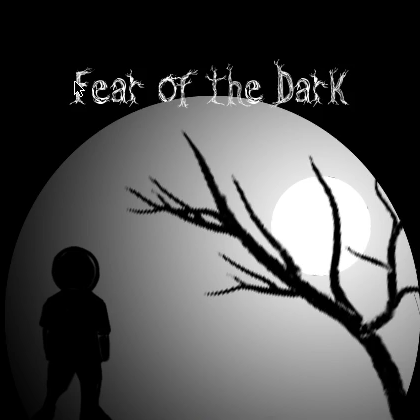

Fear of the Dark
A retro top-down RPG built with Lua and LOVE2D circa 2011. Explore maps, fight mobs, collect items, and talk to NPCs. A spiritual successor to cellgame.
Features
- Dynamic NPCs — add characters with a folder: script, portrait, sprite
- Map system — collision maps, warps, overlays, mob/NPC/item placement
- Combat — mob encounters with stats-driven battles
- Items & objectives — collect items, complete quests (hasitem, goto, talkto)
- Camera panning — maps can be any size, camera follows the player
- Web build — plays in the browser via love.js (WASM)